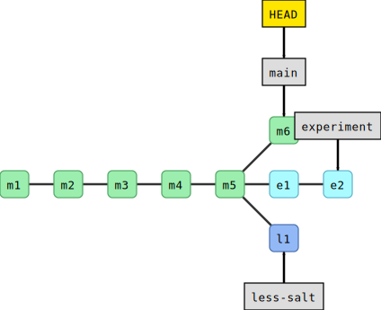
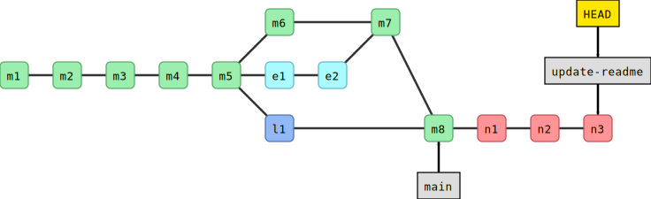

This is a list of all exercises and solutions in this lesson, mainly
as a reference for helpers and instructors. This list is
automatically generated from all of the other pages in the lesson.
Any single teaching event will probably cover only a subset of these,
depending on their interests.
Browse the recipe-book project (introduced above) and explore commits and branches. Take notes
and prepare questions. The hints are for the GitHub path in the
browser.
Browse the commit history: Are commit messages understandable?
(Hint: “Commit history”, the timeline symbol, above the file list)
Compare the commit history with the network graph (“Insights” -> “Network”). Can you find the branches?
How can you find out when a recipe was last modified?
How many changes did the Guacamole recipe receive (you find it under “sides”)?
Try to click on some of the commits to see what changed.
(Hint: “History” in the view of a single file)
Which recipes include the ingredient “salt”?
(Hint: the GitHub search. From the repository view, it should offer
the filter “repo:USER/recipe-book” by default. What if you
add a search term?)
In the Guacamole recipe, find out who modified each line last and when
(click on file, then click “Blame” button). Find out who added the cilantro
and in which commit.
(Hint: “Blame” view in the file view)
Can you use these recipes yourself? Are you allowed to share
modifications?
(Hint: look for a license file)
Browse issues and pull requests in the upstream repository (the
repository you forked from). Any idea what these might be good for?
(Hint: tabs in the repository view)
Exercise: Merging branches with pull requests (20 min)
We assume that in the previous exercise you have created a new branch
with a recipe. In our previous example, it is called new-recipe.
If not, create the branch first and add a recipe to your new branch, see
Recording changes.
We provide basic hints. You should refer to the solution as needed.
Navigate to your branch from the previous episode
(hint: the same branch view we used last time).
Begin the pull request process
(hint: There is a “Contribute” button in the branch view).
Add or modify the pull request title and description, and verify the other data.
In the pull request verify the target repository and the target
branch. Make sure that you are merging within your own repository.
GitHub: By default, it will offer to make the change to the
upstream repository, cr-workshop-exercises. You should change this, you
shouldn’t contribute your test recipe upstream yet. Where it says
baserepository, select your own user’s repository.
Create the pull request by clicking “Create pull request”. Browse
the network view to see if anything has changed yet.
Merge the pull request, or if you are not on GitHub you can merge
the branch locally. Browse the network again. What has changed?
Find out which branches are merged and thus safe to delete. Then remove them
and verify that the commits are still there, only the branch labels are
gone (hint: you can delete branches that have been merged into main).
Optional: Try to create a new branch with a new change, then open a pull
request but towards the central repository. We will later merge few of
those.
(Hint: this is mostly the same as above, for the GitHub path. But,
you set the base repository as CodeRefinery. You might need to
compare across forks.)
Switch to the main branch that you want to merge the other
branch into. (Note that this is the other way around from the
GitHub path).
Then:
Merge the other branch into main (which is then your current branch).
Find out which branches are merged and thus safe to delete. Then remove them
and verify that the commits are still there, only the branch labels are
gone. (Hint: you can delete branches that have been merged into main).
(optional, advanced) Try to create a new branch, and make a
GitHub pull request with your recipe, and contribute it to our
upstream repository. This is very complex right now since your
change has to get to GitHub, and we haven’t shown that yet. We
don’t give a solution for this.
Let us explore the value of these commands in an exercise. Future
exercises do not depend on this, so it is OK if you do not complete
it fully.
Exercise steps:
Make sure you are not inside another Git repository when running this
exercise. If you are, first step “outside” of it.
We want to avoid creating a Git repository inside another Git repository.
You can check if you are inside a Git repository with:
$ gitstatus
fatal: not a git repository (or any of the parent directories): .git
You want to see the above message which tells us that this is not a Git repository.
This is not a problem in the GitHub web interface since we are not
creating a new local repository.
Warning: many of these exercise tasks aren’t possible in the VS Code interface without extensions. You can use VS Code to clone the project, but be prepared to start the terminal to do the main tasks.
“File” → “New Window”.
Warning: many of these exercise tasks aren’t possible in the RStudio interface. You can use RStudio to clone the project, but be prepared to start the terminal to do the main tasks.
Switch to “Source Control”, then the “…” menu, then “Branch”, then “Create new branch from…” and select “networkx-2.6.3”.
Use the command line method (but you don’t need to cdnetworkx, the RStudio terminal starts in the right place.) So, run this:
$ gitswitch--createexercisenetworkx-2.6.3
(and if it doesn’t work, check Command Line for the command for older git)
Then using the above toolbox try to:
Find the code line which contains "Logicerrorindegree_correlation".
Find out when this line was last modified or added. Find the actual commit which modified that line.
Inspect the commit. What is the commit change? What is the commit metadata?
Create a branch pointing to the past when that commit was created to be
able to browse and use the code as it was back then.
How would you bring the code to the version of the code right before that line was last modified?
Solution
We use gitgrep:
$ gitgrep"Logic error in degree_correlation"
This gives the output:
networkx/algorithms/threshold.py:print("Logic error in degree_correlation",i,rdi)
Maybe you also want to know the line number:
$ gitgrep-n"Logic error in degree_correlation"
We use gitannotate:
$ gitannotatenetworkx/algorithms/threshold.py
Then search for “Logic error” by typing “/Logic error” followed by Enter.
The last commit that modified it was 90544b4fa (unless that line changed since).
We use gitshow:
$ gitshow90544b4fa
Create a branch pointing to that commit (here we called the branch “past-code”):
$ gitbranchpast-code90544b4fa
This is a compact way to access the first parent of 90544b4fa (here we
called the branch “just-before”):
The motivation for this exercise is to be able to do archaeology with Git on a
source code where the bug is difficult to see visually. Finding the offending
commit is often more than half the debugging.
Background
The script get_pi.py approximates pi using terms of the Nilakantha series. It
should produce 3.14 but it does not. The script broke at some point and
produces 3.57 using the last commit:
$ pythonget_pi.py
3.57
At some point within the 500 first commits, an error was introduced. The only
thing we know is that the first commit worked correctly.
Your task
Clone this repository and use gitbisect to find the commit which
broke the computation
(solution - spoiler alert!).
Once you have found the offending commit, also practice navigating to the last good commit.
Bonus exercise:
Write a script that checks for a correct result and use gitbisectrun to
find the offending commit automatically
(solution - spoiler alert!).
Hints
Finding the first commit:
$ gitlog--oneline|tail-n1
How to navigate to the parent of a commit with hash SOMEHASH:
$ gitswitch--createBRANCHNAMESOMEHASH~1
Instead of a tilde you can also use this:
$ gitswitch--createBRANCHNAMESOMEHASH^
How to turn your project to a Git repo and share it
Exercise: Turn your project to a Git repo and share it (25 min)
Create a new directory called myproject with one or few files in it.
This represents our own project. It is not yet a Git repository. You can try
that with your own project or use a simple placeholder example.
Turn this new directory into a Git repository.
Share this repository on GitHub (or GitLab, since it really works the same).
We offer three different paths of how to do this exercise.
Via GitHub web interface: easy and can be a good starting point if you are completely
new to Git.
VS Code is quite easy, since VS Code can offer to create the
GitHub repositories for you.
Command line: you need to create the
repository on GitHub and link it yourself.
Create an repository on GitHub
First log into GitHub, then follow the screenshots and descriptions below.
Click on the “plus” symbol on top right, then on “New repository”.
Then:
Choose a repository name, add a short description, and in this case make sure to check “Add a
README file”. Finally “Create repository”.
Upload your files
Now that the repository is created, you can upload your files:
First time you do this you might need to authorize VS Code to access your
GitHub account by redirecting you to https://github.com/login/oauth/authorize.
After it is published, click on “Open on GitHub”.
My example project here consists of two files. Replace this with your own
example files:
$ ls-l
.rw------- 19k user 7 Mar 17:36 LICENSE.rw------- 21 user 7 Mar 17:36 myscript.py
I will first initialize a Git repository in this directory.
If you get an error, try without the -bmain (and your default branch will
then be called master, this will happen for Git versions older than
2.28):
$ gitinit-bmain
Now add and commit the two files to the Git repository:
$ gitaddLICENSEmyscript.py
$ gitcommit-m"putting my project under version control"
If you want to add all files in one go, you can use gitadd. instead of gitaddLICENSEmyscript.py.
Now you have a Git repository with one commit. Verify this with gitlog.
But it’s still only on your computer. Let’s put it on GitHub next.
Create an empty repository on GitHub
First log into GitHub, then follow the screenshots and descriptions below.
Click on the “plus” symbol on top right, then on “New repository”.
Then create an empty repository without any files and without any commits:
Choose a repository name, add a short description, but please do not check “Add a
README file”. For “Add .gitignore” and “Choose a license” also leave as “None”. Finally “Create repository”.
Once you click the green “Create repository”, you will see a page similar to:
What this means is that we have now an empty project with either an HTTPS or an
SSH address: click on the HTTPS and SSH buttons to see what happens.
Push an existing repository from your computer to GitHub
We now want to follow the “… or push an existing repository from the command line”:
In your terminal make sure you are still in your myproject directory.
Copy paste the three lines below the red arrow to the terminal and execute
those, in my case (you need to replace the “USER” part and possibly also
the repository name):
Enumerating objects: 4, done.
Counting objects: 100% (4/4), done.
Delta compression using up to 12 threads
Compressing objects: 100% (3/3), done.
Writing objects: 100% (4/4), 6.08 KiB | 6.08 MiB/s, done.
Total 4 (delta 0), reused 0 (delta 0), pack-reused 0
To github.com:USER/myproject.git
* [new branch] main -> main
branch 'main' set up to track 'origin/main'.
Reload your GitHub project website and your commits should now be
online!
Troubleshooting
error: remote origin already exists
Explanation: You probably ran a gitremoteaddorigin... command, then changed your
mind about HTTPS or SSH and then tried to run the other gitremoteaddorigin... command but “origin” then already exists.
Recovery:
First remove “origin” with gitremoteremoveorigin
Then run the correct gitremoteaddorigin... command
remote contains work that you do not have
Explanation: You probably clicked on “Add a README file” and now the
repository on GitHub is not empty but contains one commit and locally you
have a different history. Git now prevents you from accidentally overwriting
the history on GitHub.
Recovery:
Use gitpush--force instead of gitpush, which will force Git to overwrite the history on GitHub
Note that this is a powerful but also possibly dangerous option but here it
helps us. If it’s a brand new repo, it probably is fine to do this. For real
repositories, don’t do this unless you are very sure what is happening.
This is not fully explained, because a lot of it is similar to the “Command
line” method (and an RStudio expert could help us some). The main differences
are:
Put your project under version control
Tools → Version control → Project setup → Version control system = Git.
Select “Yes” for “do you want to initialize a new git repository for this project.
Select yes to restart the project with RStudio.
Switch to branch main to have you branch named that.
Create an empty repository on GitHub
Same as command line
Push an existing repository from your computer to GitHub
Under the “Create new branch” button → “Add Remote”
Remote name: origin
Remote URL: as in command line (remember to select SSH or HTTPS as you have configured your RStudio)
The “Push” (up arrow) button will send changes on your current branch to the remote. The “Pull” (down arrow) will get changes from the remote.
Add 1/2 onion to ingredients.txt and also the instruction
to “enjoy!” to instructions.txt.
After modifying the files, do not stage the changes yet (do not gitadd
yet).
When you are done editing the files, try gitdiff:
$ gitdiff
You will see (can you identify in there the two added lines?):
diff --git a/ingredients.txt b/ingredients.txtindex 4422a31..ba8854f 100644--- a/ingredients.txt+++ b/ingredients.txt@@ -2,3 +2,4 @@* 1 chili
* 1 lime
* 2 tsp salt
+* 1/2 oniondiff --git a/instructions.txt b/instructions.txtindex 7811273..2b11074 100644--- a/instructions.txt+++ b/instructions.txt@@ -4,3 +4,4 @@* squeeze lime
* add salt
* and mix well
+* enjoy!
Now first stage and commit each change separately (what happens when we leave out the -m flag?):
$ gitaddingredients.txt
$ gitcommit-m"add half an onion"$ gitaddinstructions.txt
$ gitcommit# <-- we have left out -m "..."
When you leave out the -m flag, Git should open an editor where you can edit
your commit message. This message will be associated and stored with the
changes you made. This message is your chance to explain what you’ve done and
convince others (and your future self) that the changes you made were
justified. Write a message and save and close the file.
When you are done committing the changes, experiment with these commands:
$ gitlog
$ gitlog--stat
$ gitlog--oneline
We can make modifications to a file by clicking on the file and then the
pen symbol:
By clicking on the pen symbol we can switch to edit mode.
Before committing the change, click on “Preview”.
Our goal is to arrive at two new commits:
“add half an onion” (modifying ingredients.txt)
“don’t forget to enjoy” (modifying instructions.txt)
When you are done committing the changes, try to browse commit history
on GitHub.
You have noticed that it is possible to work either in the command
line or in the browser. It could help to deepen the understanding
trying to do the above steps in both.
If you have managed to do the above in the command line, try now in the browser.
If you got stuck in the command line and move to the browser, try now to trouble-shoot the command line Git.
In this exercise, you will create another new branch and few more commits.
We will use this in the next section, to practice
merging. The goal of the exercise is to end up with 3 branches.
Change to the branch main.
Create another branch called less-salt.
Note! makes sure you are on main branch when you create the less-salt branch.
A safer way would be to explicitly mention to create from the main branch
as shown below:
$ gitbranchless-saltmain
Switch to the less-salt branch.
On the less-salt branch reduce the amount of salt.
Commit your changes to the less-salt branch.
Use the same commands as we used above.
We now have three branches (in this case HEAD points to less-salt):
$ gitbranch
experiment* less-salt main$ gitgraph
* bf28166 (HEAD -> less-salt) reduce amount of salt| * bcb8b78 (experiment) maybe little bit less cilantro| * f6ec7b7 let us try with some cilantro|/* e7cf023 (main) don't forget to enjoy* 79161b6 add half an onion* a3394e3 adding README* 3696246 adding instructions* f146d25 adding ingredients
Here is a graphical representation of what we have created:
Now switch to main.
In a new commit, improve the README.md file (we added the word “Guacamole”):
# Guacamole recipe
This is an exercise repository.
Now you should have this situation:
$ gitgraph
* b4af65b (HEAD -> main) improve the documentation| * bf28166 (less-salt) reduce amount of salt|/| * bcb8b78 (experiment) maybe little bit less cilantro| * f6ec7b7 let us try with some cilantro|/* e7cf023 don't forget to enjoy* 79161b6 add half an onion* a3394e3 adding README* 3696246 adding instructions* f146d25 adding ingredients

And for comparison this is how it looks on GitHub.
Create a couple of commits on the new branch (for instance edit README.md):

Now switch to main.
Merge the new branch to main.
Examine the result with gitgraph.
Have you expected the result? Discuss what you see.
Solution
You will see that in this case no merge commit was created and Git merged the
two branches by moving (fast-forwarding) the “main” branch (label) three
commits forward.
This was possible since one branch is the ancestor of the other and their
developments did not diverge.
A merge that does not require any merge commit is a fast-forward merge.
(optional) Branch-4: Rebase a branch (instead of merge)
As an alternative to merging branches, one can also rebase branches.
Rebasing means that the new commits are replayed on top of another branch
(instead of creating an explicit merge commit).
Note that rebasing changes history and should not be done on public commits!
Create a new branch, and make a couple of commits on it.
Switch back to main, and make a couple of commits on it.
Inspect the situation with gitgraph.
Now rebase the new branch on top of main by first switching to the new branch, and then gitrebasemain.
Inspect again the situation with gitgraph. Notice that the commit hashes have changed - think about why!
Solution
You will notice two things:
History is now linear and does not contain merge commits.
All the commit hashes that were on the branch that got rebased, have
changed. This also demonstrates that gitrebase is a command that alters
history. The commit history looks as if the rebased commits were all done
after the main commits.
Both 2 and 3 would do the job. Note that in 2 we first stage the file, and then create the
branch and commit to it. In 1 we create the branch but do not switch to it, while in 4 we
don’t give the --create flag to gitswitch to create the new branch.
In this exercise, we repeat almost exactly what we did above with a
different ingredient.
Create two branches before making any modifications.
Again modify some ingredient on both branches.
Merge one, merge the other and observe a conflict, resolve the conflict and commit the merge.
What happens if you apply the same modification on both branches?
If you create a branch like-avocados, commit a change, then from this
branch create another banch dislike-avocados, commit again, and try to
merge both branches into main you will not see a conflict. Can you
explain, why it is different this time?
Solution
4: No conflict in this case if the change is the same.
5: No conflict in this case since in Git history one change happened after the other. The two changes
are related and linked by Git history and one is a Git ancestor of the
other. Git will assume that since we applied one change after the other,
we meant this. There is nothing to resolve.
(optional) Conflict-2: Resolve a conflict when rebasing a branch
Create two branches where you anticipate a conflict.
Try to merge them and observe that indeed they conflict.
Abort the merge with gitmerge--abort.
What do you expect will happen if you rebase one branch on top of the
other? Do you anticipate a conflict? Try it out.
Solution
Yes, this will conflict. If it conflicts during a merge, it will also conflict
during rebase but the conflict resolution looks slightly different:
You still need to look for conflict markers but you tell Git that you resolved
a conflict with gitadd and then you continue with gitrebase--continue.
Follow instructions that you get from the Git command line.
(optional) Conflict-3: Resolve a conflict using mergetool
Again create a conflict (for instance disagree on the number of avocados).
Stop at this stage:
Auto-merging ingredients.txt
CONFLICT (content): Merge conflict in ingredients.txt
Automatic merge failed; fix conflicts and then commit the result.
Instead of resolving the conflict manually, use a visual tool
(requires installing one of the visual diff tools):
$ gitmergetool
Your current branch is left, the branch you merge is right, result is in the middle.
After you are done, close and commit, gitadd is not needed when using gitmergetool.
If you have not instructed Git to avoid creating backups when using mergetool, then to be on
the safe side there will be additional temporary files created. To remove those you can do
a git clean after the merging.
To view what will be removed:
$ gitclean-n
To remove:
$ gitclean-f
To configure Git to avoid creating backups at all:
One option to help us create nice logical commits is to stage interactively
with gitcommit--patch:
Make two changes in instructions.txt, at the top and bottom
of the file.
Make sure that they are separated by at least several unmodified lines.
Run gitcommit--patch. Using the keystrokes above, commit one of
the changes.
Do it again for the other change.
When you’re done, inspect the situation with gitlog, gitstatus, gitdiff and gitdiff--staged.
When would this be useful?
Solution
This can be useful if you have several modification in a file (or several
files) but you decide that it would be beneficial to save them as two (or
more) separate commits.
Make an incomplete change to the recipe or a typo in your change, gitadd and gitcommit the incomplete/unsatisfactory change.
Inspect the unsatisfactory but committed change with gitshow. Remember
or write down the commit hash.
Now complete/fix the change but instead of creating a new commit, add the
correction to the previous commit with gitadd, followed by gitcommit--amend. What changed?
Solution
One thing that has changed now is the commit hash. Modifying the previous
commit has changed the history. This is OK to do on commits that other people
don’t depend on yet.
Undoing-3: Destroy our experimentation in this episode
After we have experimented with reverts and amending, let us destroy
all of that and get our repositories to a similar state.
First, we will look at our history (gitlog/gitgraph) and
find the last commit HASH before our tests.
Then, we will gitreset--hardHASH to that.
Then, gitgraph again to see what happened.
$ gitlog--oneline
d3fc63a (HEAD -> main) Revert "not sure this is a good idea"e02efcd not sure this is a good ideab4af65b improve the documentatione7cf023 don't forget to enjoy79161b6 add half an oniona3394e3 adding README3696246 adding instructionsf146d25 adding ingredients$ gitreset--hardb4af65b
HEAD is now at b4af65b improve the documentation$ gitlog--oneline
b4af65b (HEAD -> main) improve the documentatione7cf023 don't forget to enjoy79161b6 add half an oniona3394e3 adding README3696246 adding instructionsf146d25 adding ingredients
What happens if you accidentally remove a tracked file with gitrm, is it gone forever?
Is it OK to modify commits that nobody has seen yet?
What situations would justify to modify the Git history and possibly remove commits?
Solution
It is not gone forever since gitrm creates a new commit. You can revert the commit to get the file back.
If you haven’t shared your commits with anyone it can be alright to modify them.
If you have shared your commits with others (e.g. pushed them to GitHub), only extraordinary
conditions would justify modifying history. For example to remove sensitive or secret information.
Check status/diff, stash the change with gitstash, check status/diff again.
Make a separate, unrelated change which doesn’t touch the same
lines. Commit this change.
Pop off the stash you saved with gitstashpop, and check status/diff.
Optional: Do the same but stash twice. Also check gitstashlist.
Can you pop the stashes in the opposite order?
Advanced: What happens if stashes conflict with other changes? Make
a change and stash it. Modify the same line or one right above or
below. Pop the stash back. Resolve the conflict. Note there is no
extra commit.
Advanced: what does gitgraph show when you have something
stashed?
Solution
5: Yes you can. With gitstashpopINDEX you can decie which stash
index to pop.
6: In this case Git will ask us to resolve the conflict the same way
when resolving conflicts between two branches.
7: It shows an additional commit hash with refs/stash.


{kind=link}


{kind=link}

{kind=link}
{kind=link}

{kind=link}
{kind=link}